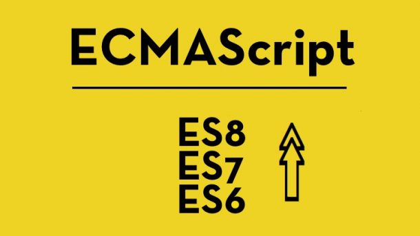
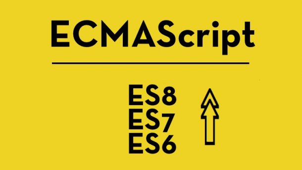

Sua História
JavaScript (frequentemente abreviado como JS) é uma linguagem de programação interpretada estruturada, de script em alto nível com tipagem dinâmica fraca e multiparadigma (protótipos, orientado a objeto, imperativo e, funcional). Juntamente com HTML e CSS, o JavaScript é uma das três principais tecnologias da World Wide Web
 


Início no Netscape
Em 1993, o Centro Nacional de Aplicações de Supercomputação (NCSA), uma unidade da Universidade de Illinois em Urbana-Champaign, lançou o NCSA Mosaic, o primeiro navegador gráfico popular da Web, que desempenhou um papel importante na expansão do crescimento da nascente World Wide Web além do nicho NeXTSTEP onde a World Wide Web havia se formado três anos antes. Em 1994, uma empresa chamada Mosaic Communications foi fundada em Mountain View, na Califórnia, e empregou muitos dos autores originais do NCSA Mosaic para criar o Mosaic Netscape. No entanto, não compartilhou intencionalmente nenhum código com o NCSA Mosaic. O codinome interno do navegador da empresa era Mozilla, uma junção de "Mosaic and Godzilla". A primeira versão do navegador da Web, Mosaic Netscape 0.9, foi lançada no final de 1994. Em quatro meses, já havia conquistado três quartos do mercado de navegadores e se tornado o principal navegador da Web nos anos 90. Para evitar problemas de propriedade de marca registrada com o NCSA, o navegador foi posteriormente renomeado para Netscape Navigator no mesmo ano, e a empresa assumiu o nome de Netscape Communications. A Netscape Communications percebeu que a Web precisava se tornar mais dinâmica. Marc Andreessen, o fundador da empresa, acreditava que o HTML precisava de uma "linguagem de cola" que fosse fácil de usar por Web designers e programadores de meio período para montar componentes como imagens e plugins, onde o código poderia ser escrito diretamente na Web.
Em 1995, a Netscape Communications recrutou Brendan Eich com o objetivo de incorporar a linguagem de programação Scheme em seu Netscape Navigator. Antes que ele pudesse começar, a Netscape Communications colaborou com a Sun Microsystems para incluir na linguagem de programação mais estática do Netscape Navigator Sun, Java, a fim de competir com a Microsoft pela adoção de tecnologias e plataformas da Web. A Netscape Communications decidiu então que a linguagem de script que eles queriam criar complementaria o Java e deveria ter uma sintaxe semelhante, o que excluía a adoção de outras linguagens como Perl, Python, TCL ou Scheme. Para defender a ideia do JavaScript contra propostas concorrentes, a empresa precisava de um protótipo. Eich escreveu um em 10 dias, em maio de 1995.
Embora tenha sido desenvolvido sob o nome Mocha, a linguagem foi oficialmente chamada de LiveScript quando foi lançada em versões beta do Netscape Navigator 2.0 em setembro de 1995, mas foi renomeada para JavaScript quando foi lançada no Netscape Navigator 2.0 beta 3 Dezembro. A escolha final do nome causou confusão, dando a impressão de que a linguagem era uma derivação da linguagem de programação Java, e a escolha foi caracterizada como uma manobra de marketing da Netscape para dar ao JavaScript o status da linguagem da moda, o Java.
Há um equívoco comum de que o JavaScript foi influenciado por uma linguagem de script de página da Web desenvolvida pelo Nombas chamada Cmm (não confundir com o C posteriormente - criado em 1997). Brendan Eich, no entanto, nunca tinha ouvido falar de Cmm antes de criar o LiveScript. Os Nombas lançaram seus scripts de página da Web incorporados no Netscape, embora o script de página da Web não fosse um conceito novo, conforme mostrado pelo navegador da Web ViolaWWW. Nombas mais tarde passou a oferecer JavaScript em vez de Cmm em seu produto ScriptEase e fazia parte do grupo TC39 que padronizava o ECMAScript.